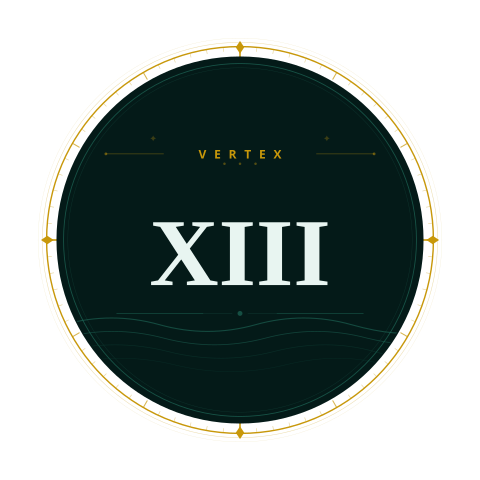

Caraga Navigator
Region XIII · Philippines
Offline Mode
Back
Get Directions
Tap to open navigator
Get Directions
100% offline — no internet needed for navigation
All routes pre-loaded — works without internet
Starting Point
— Choose starting point —
Swap
Destination
— Choose destination —
Travel Mode
Drive
Bike
Walk
Get Directions
—
Distance
—
Est. Time
—
Route Type
Step-by-Step Directions
Ready to Navigate
All routes work offline. Choose a start and destination then tap Get Directions.
Quick Destinations
Caraga
Region XIII
Scroll to zoom · Drag to pan